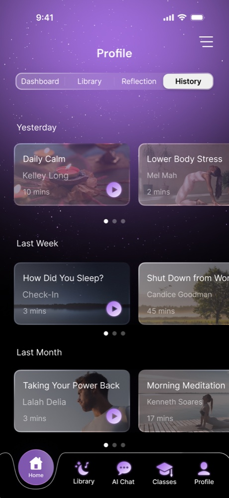
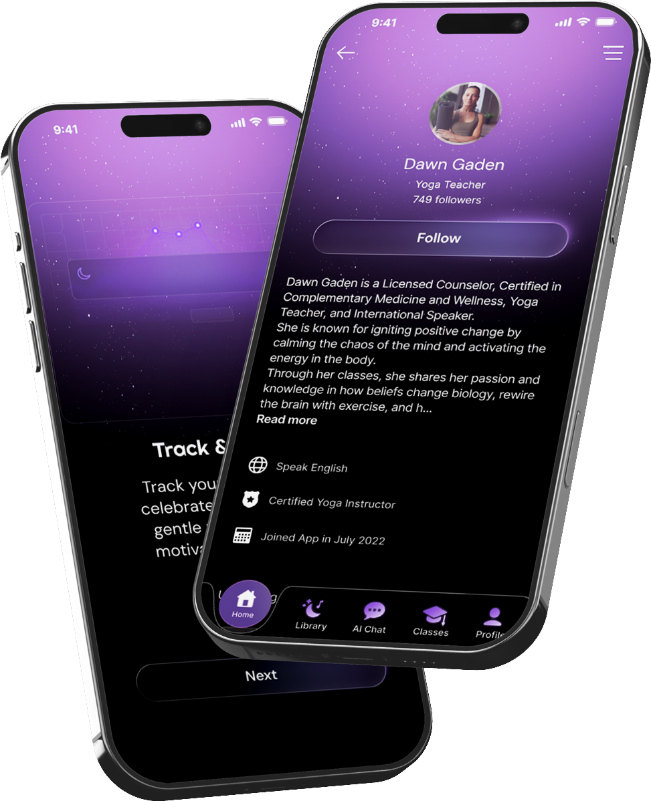
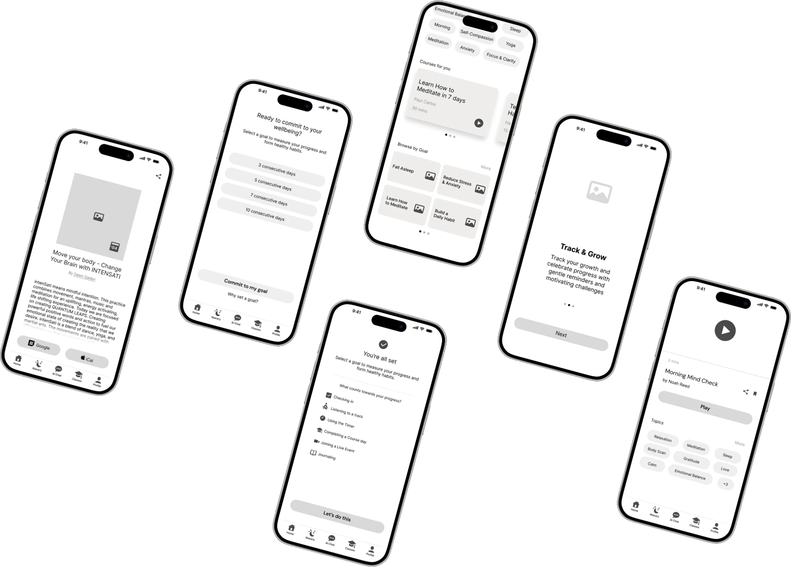
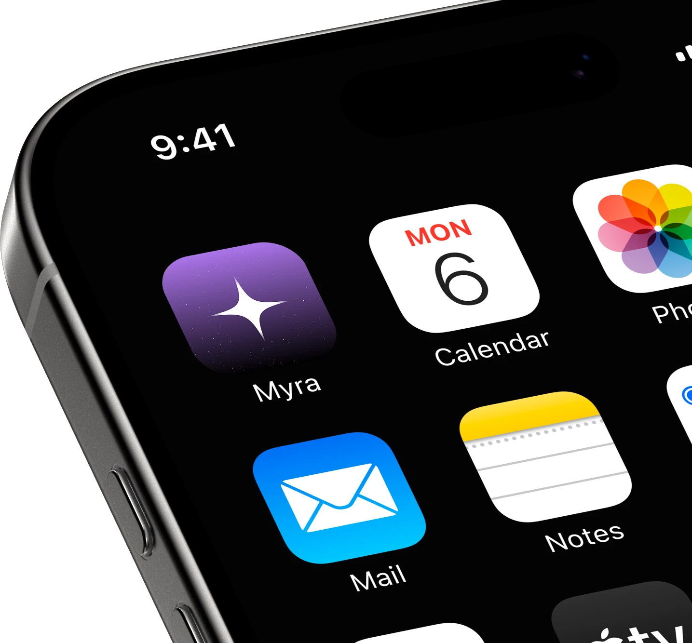
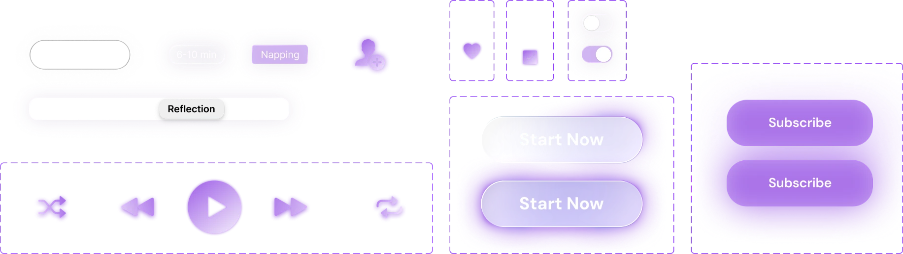
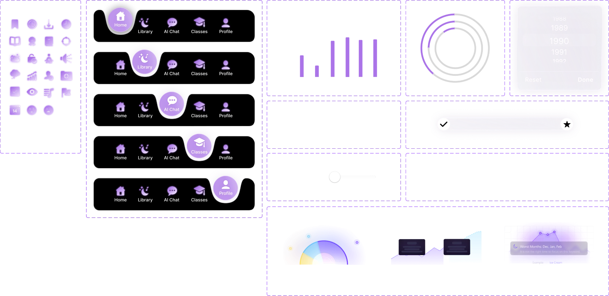
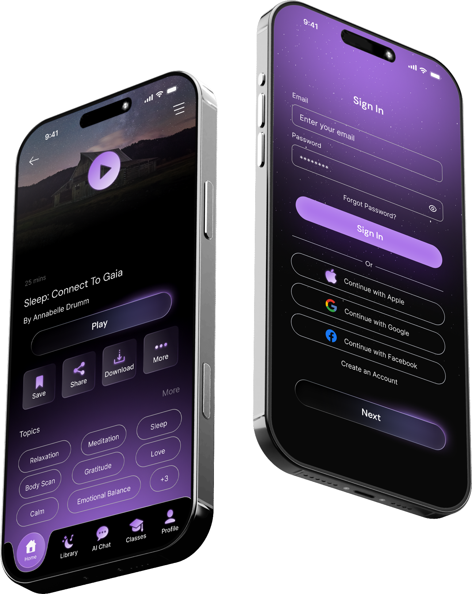
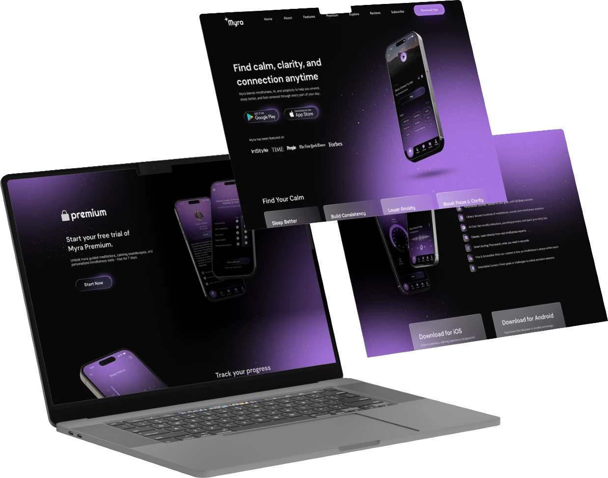
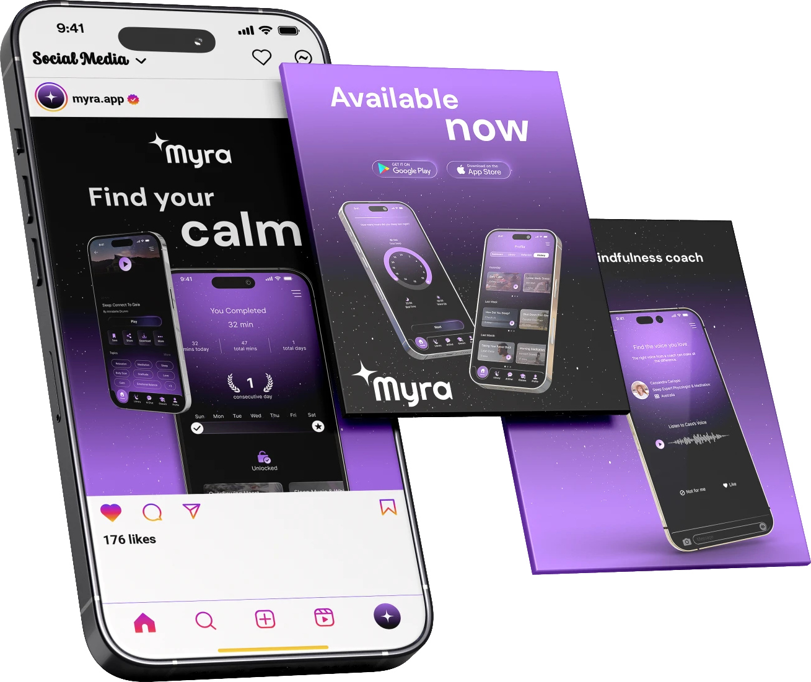

Ease of Recall
Returning users can easily pick up where they left off, continuing goals, challenges, or favorite sessions without needing to relearn the interface.

01 / Overview
Myra is a mindfulness and well-being mobile app designed to help users manage stress, improve focus, and cultivate healthy mental habits through short guided sessions and personalized recommendations.
It combines modern technology with mindful design to create a calm, intuitive experience that fits seamlessly into the user’s daily routine.
Myra offers a rich library of guided meditations, breathing exercises, and soundscapes, personalized through an AI assistant that analyzes user moods and habits to suggest the most relevant content.
In this project, the focus was on building a soothing and accessible UX, one that encourages consistency and emotional balance through simple interactions, soft visuals, and a flexible interface that adapts to different user needs.
02 / Usability
Returning users can easily pick up where they left off, continuing goals, challenges, or favorite sessions without needing to relearn the interface.
Myra’s interface is designed for instant familiarity. New users quickly understand how to use the app and complete key actions within minutes.
Whether you’re new to mindfulness or an experienced practitioner, Myra adapts to your level, offering personalized guidance or open exploration based on your preferences.
Every interaction is meant to leave the user feeling calm, accomplished, and connected, turning technology into a mindful experience.
Users can intuitively navigate Myra, from signing up and setting goals to starting a meditation or class. Every action feels clear, smooth, and purposeful.
03 / Pain points
Users struggle to stay consistent with mindfulness or healthy habits. They often lose motivation without reminders, encouragement, or engaging app mechanics that bring them back to practice.
There’s little emotional connection, no sense of progress or reward that motivates users to return. The experience feels passive rather than inspiring.
Many mindfulness apps lock their best content behind paywalls, while free options feel limited and repetitive. Users are frustrated by the lack of variety and accessibility.
Poor filtering and unclear structure make it difficult to find free or relevant content quickly, discouraging users from exploring further.
Users want experiences tailored to their mood, emotional state, and daily needs, but most apps provide generic recommendations that don’t adapt dynamically.
The target audience leads busy lives with little time for self-care. They need short, effective 5–10 minute sessions with gentle reminders that fit naturally into their daily routine.
04 / Competitors
| App | Purpose | Advantages | Disadvantages |
|---|---|---|---|
| Balance | A personalized meditation app for everyone, beginners and advanced users worldwide. |
|
|
| Calm | Focuses mainly on sleep and relaxation. Includes stories, music, guided meditations, and breathing techniques. |
|
|
| Insight Timer | Huge library with thousands of meditations, talks, and online courses. |
|
|
| Breethe | Offers meditations, sleep aid, music, coaching, and stress-relief tools. |
|
|
05 / Research
Many people struggle to maintain mindfulness habits and emotional balance in their daily lives.
Existing apps often feel repetitive, lack motivation triggers, and hide quality content behind paywalls, making it difficult for users to stay consistent and engaged.
Myra solves this by combining AI-driven personalization with progress tracking and motivational design.
It adapts to each user’s mood and habits, offering tailored sessions, gentle reminders, and positive feedback. As users complete goals, they unlock new content and rewards, building lasting consistency, balance, and motivation.

06 / Persona
To create a short, consistent daily routine (5–10 minutes) that helps him unwind, reduce stress, and stay grounded amid a fast-paced work environment.
Daniel finds it hard to maintain healthy habits. He starts meditating or doing breathwork but usually stops after a few days because he loses motivation and forgets to keep going.
07 / Features
Exclusive content, playlists, and challenges that open as users complete sessions and milestones.
Analyzes user moods, habits, and goals to provide customized meditation sessions and daily recommendations.
Visual insights and statistics that help users monitor their growth, consistency, and emotional balance over time.


08 / Structure
09 / Low-fi

10 / Design system
Responsive Logo


Righteous
ABCDEFGHIJKLMNOPQRSTUVWXYZ
abcdefghijklmnopqrstuvwxyz
1234567890!@#$%^&*()
DM Sans
ABCDEFGHIJKLMNOPQRSTUVWXYZ
abcdefghijklmnopqrstuvwxyz
1234567890!@#$%^&*()
Inter
ABCDEFGHIJKLMNOPQRSTUVWXYZ
abcdefghijklmnopqrstuvwxyz
1234567890!@#$%^&*()
#000000#AB74EA#FFFFFF

11 / Hi-fi

13 / Web

14 / Play it
Thank you for watching
12 / Launch
Social media graphics
